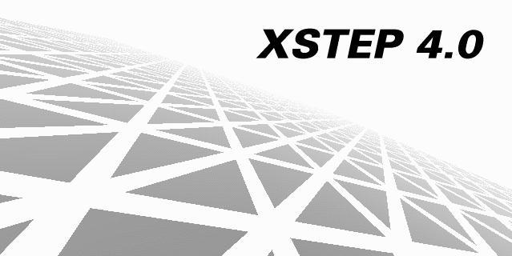

INTRODUCTION
This manual is the basic reference for version 4.0 of XSTEP toolkit for X, a library of widgets designed to enable programmers to write complex applications in C language with the look and feel of NeXTSTEP* graphic interface.
The main target for this manual is programmers with good knowledge of C language and basic X library operation. XSTEP is a open and flexible widget library: X library functions and X extensions can be used without restrictions.
DISPLAYS AND SCREENS
This version of XSTEP can work with multiple displays with multiple screens. A display is a network graphic server, with one or more graphic card and one mouse (or any other pointer device) and a keyboard. One display must have one or more monitors attached in one or more graphic cards. The visible portion of image in these monitors are called screens.
For example, in a network workstation you have two monitors attached in two graphic cards, one mouse and one keyboard. A graphic server called X server is running in this machine and allow TCP connections in the port 6000. In the X notion, this machine have one display in the port 6000 (hostname:0) and two screens (hostname:0.0 and hostname:0.1).
For XSTEP, a screen is called desktop and have authority to work in all pixels visible in your monitor. You can have many desktops as you have screens and the function XSDesktop will return to you a double linked list of all screens available in a specific display.
WIDGETS
The X library is a library for windows and the XSTEP toolkit is a library of widgets. All XSTEP widgets are in fact windows, with distinct code to perform automated tasks, like redraw a button when you click in it or cache multiple exposed areas to redraw all in a single pass. Any widget, except a screen, must be based in other widget, called parent. When you create a new widget inside the parent widget, all attributes are copyed and small modifications are make to enable a new functionality.
For example, when you create a button inside a window, the function XSButton will copy the window widget to a new button widget, then will set a new event mask with functions to manage area exposures, button press and button release events. All other attributes are like the parent window. This new button widget is then attached to a child stack in the parent widget. In the next XSCheckEvent, this stack will be processed and a new window will be created in the X server and this window will generate events. These events have a specific target, a window id, and will active callback functions in the widget with the correct window id.
All widgets must have a parent, except screens: screens are already created and all informations in the screen widget are based in a real object in the X server (the physical structure of a screens can't be destroyed or changed).
WIDGETS
XSDesktop
XSWindow, XSWindowClose
XSButton
XSCheck
XSRadio
XSTune
XSPopup
XSEdit
XSLabel
XSScroll
XSDialog
XSMenu
XSTextScroll
PIXMAP FUNCTIONS
XSPixmapUpdate
XSPixmapDraw
XSPixmapCreate
XSPixmapDestroy
XSPixmapCreateXPM
XSPixmapCreateXPMF
IMAGE FUNCTIONS
XSImageCopy
XSImageRGB24Swap
XSImageGamma
XSImageInverse
XSImageClear
XSImageCreate
XSImageDestroy
XSImage2Pixmap
TEXT FUNCTIONS
XSCreateText
XSWrapText
XSDrawText
MISC FUNCTIONS
XSCheckEvent
XSColor, XSNamedColor
XSWidgetCreate
XSDrawBox
XSTEP TYPEDEFS
XSWidget
XSText
XSPixmap
XSImage
XSGlobal